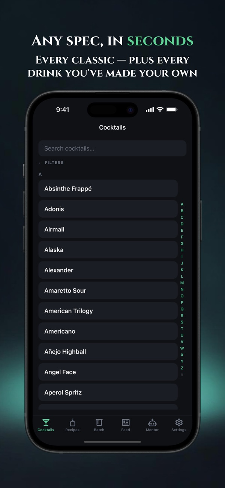
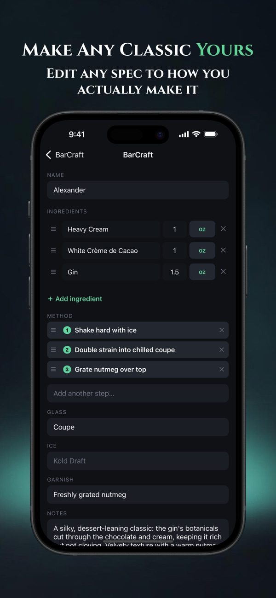

BarCraft
An iPhone app for bartenders. Find any cocktail recipe in a couple of taps, change it to the way you make it, and work out a big batch for a party without doing math on a napkin. I built every part of it myself, after my first attempt at the idea collapsed under its own weight.
A cocktail spec app for working bartenders and serious home bartenders: search a library of classics and modern classics, edit any spec into your version, write your own syrups and use them as ingredients, batch any drink with dilution, and talk a drink through with an AI mentor. On the App Store since July 2026.
FastAPI + SQLAlchemy 2 / Alembic on MySQL (RDS), an Expo / React Native client that talks to the API only through a client generated from its OpenAPI schema, shared TypeScript domain logic for the batch and unit math, an Electron curator app for me, and Claude behind the Mentor (SSE streaming, per-tier models) and the admin content tools. Solo, deployed on EC2.
Switch the reading level at the top at any time. Every section rewrites itself, from no jargon at all to the real terms.
The current status
The moment it's built for
Picture a bartender on a busy night. The bar is three deep, both hands are full, and someone orders a drink they make twice a year. They need the recipe now, not after scrolling through a recipe blog's life story. That moment is what BarCraft is for: any recipe in under five seconds, in as few taps as possible.
I know that moment because I work it. I've bartended for years, and making big batches of cocktails ahead of a shift is part of the job where I work now. BarCraft is the tool I wanted behind the bar.
Built for service: behind the bar, hands busy, a guest orders something off-menu and you need the spec in under five seconds. It's also for the managers who build drink menus and batch for the week, and for anyone mixing at home who wants their own specs in one place. It grew out of my own bartending, where batching is part of the shift.
The design target is a single user story: a bartender mid-shift needs a spec in under five seconds. Every screen defers to it: lookup is the home screen, and reading never sits behind a sign-in wall. Secondary users (menu builders, home bartenders) get the same app, not a separate mode.



The first version failed
BarCraft started in June 2025 under another name, Bar Tools Pro, and I kept adding to it. Accounts for owners, managers and bartenders, each with different permissions. Training games and leaderboards. Cost calculators. Staff reports. Guides to wine, beer and spirits. A blog. Every idea was a good one. None of them was what a bartender reaches for in the middle of a shift.
It grew until it was too big to change safely. So in June 2026 I threw the whole thing out and started over, with a written list of everything the new version would not do.
Bar Tools Pro, June 2025: roles for owners, managers and bartenders with a permission matrix, training games, leaderboards, cost and pour calculators, employee analytics, education hubs, a blog, lead generation. All cool, none of it what you need on the rail. The main server file reached 654 KB. In June 2026 I scrapped it and rebuilt from nothing as BarCraft.
Bar Tools Pro's app.py reached 654 KB: every feature in one file, roles and permission matrices threaded through all of it. Rather than refactor, I rebuilt from zero in June 2026 behind an explicit scope document and a numbered decision log, as a monorepo with real boundaries: apps/api, apps/mobile, apps/desktop, apps/landing, packages/shared.
What I learned: a product dies from the features you add as much as the ones you don't. Deciding what to leave out is the job.
One rule
"If a feature doesn't help a bartender in the moment, it waits."
Every new idea has to answer one question: does a bartender need this during a shift? If the honest answer is "it would be nice for managers" or "it would be fun," it goes on a someday list instead of into the app. The someday list isn't a graveyard; it's how the app stays small enough to finish.
The "someday / never" list for v1: team and venue accounts, comments and follows, costing and inventory, training games, education hubs. Each is parked, not forbidden. What made the cut: lookup, your own specs, recipes, the batch calculator, a simple feed, and later the Mentor.
Scope lives in docs/01-vision-and-scope.md, and every non-obvious choice gets an entry in a numbered decision log with the reasoning, now up to D69. Parked items are listed explicitly so a new idea is checked against them instead of quietly creeping in. The log is also how reversals stay honest: D36 reverses an earlier database decision and says why.
Finding a drink
Open the app and you're already on the search screen. Type a few letters of a drink's name, or the name of a spirit, and the list narrows as you type. Each drink is labeled with what it's built on, like gin or whiskey, and alcohol-free drinks are clearly marked so you never hand one to the wrong guest.
Search the classics, modern classics and your own specs by name, spirit or style. Typing an ingredient offers a chip ("+ Mezcal"), and stacking chips finds every drink with all of them. Each row carries a base-spirit badge (Gin, Whiskey, Rum, Agave, Wine, Liqueur, Zero-Proof), with a real zero-proof filter. Show amounts in ounces or milliliters.
Search covers canon and the user's own rows in one result set. The base-spirit badge is derived by priority order from ingredient families; the labels live in packages/shared as a mirror of the server's enum so no client invents its own wording. Units are stored canonically in ml and displayed in the user's choice; ml display uses the 30 ml bar ounce snapped to a 2.5 ml grid, so a metric spec reads like one a bartender would write. A classifier filled every drink's alcoholic flag and spirit family in production with nothing left unmatched.
Making it yours
Every bartender makes a classic a little differently. In BarCraft you can change any recipe to match how you make it. You get your own copy, the original stays the same for everyone else, and you can go back to the original any time. Drinks you never make can be hidden so your list stays short.
Edit any classic and BarCraft quietly forks your own version: your spec shows up wherever that drink does, the shared original is untouched, and Reset brings it back. Write originals from scratch, hide the classics you never pour, and save someone else's public spec from the feed as your own editable copy.
Copy-on-write is the heart of the data model: one cocktails table where owner_id IS NULL is shared canon. Editing a classic never mutates it; the server forks one private row (forked_from_id, owner_id = user) and edits that. Reset deletes the fork, hide is a row in user_hidden_library, saving from the feed forks a public cocktail. Fork and ownership logic is strictly server-side, so no client can get it wrong.
Homemade syrups
Good bars make their own ingredients: flavored syrups, infusions, house mixes. In BarCraft you write those recipes too, with how much each one makes, and then use them inside your cocktail recipes like any bottle on the shelf. Need more? Double it, or tell it "make 2 liters," and it works out every amount.
Syrups, tinctures, cordials and infusions, each with a yield, usable as an ingredient in any cocktail. Scale a recipe by ½× to 4× or to a target ("Make 2 L"), with rounding a bartender would actually measure: 2.5 and 5 ml steps, bar fractions under 4 oz, whole dashes.
Each ingredient line points at exactly one of: a base ingredient, a user recipe, or free text. Recipe scaling lives in packages/shared (scale.ts, unit-tested) and rounds after display conversion, only when scaled; part lines never scale. Recipe reads work signed out (canon only; private rows 404 rather than 401), and every write still needs a user.
The batch calculator
For a party, you don't make 50 drinks one at a time. You mix them ahead in big bottles. Doing that math by hand is where mistakes happen, especially the part people forget: when you shake a drink with ice, some of the ice melts into it. A batched drink has no ice, so you have to add that water yourself, or every drink comes out too strong.
BarCraft does all of it. Pick a drink, say how many, and it tells you every amount, the water to add, how much of each homemade syrup to make, and how many bottles it fills.
Load any cocktail, scale by drink count or by target volume, and optionally add dilution (the water the ice would have added; it's off until you switch it on). Carbonated toppers stay out of the batch and are listed per drink, recipe ingredients tell you how many batches to prep, and the total comes with a container fit.
Pure, unit-tested logic in packages/shared/batch.ts, shared by every client. Sum the non-carbonated volumetric lines, scale by count (or target volume ÷ diluted single-drink volume), add dilution water as an explicit line, compute prep for recipe lines as scaled ml ÷ yield, then container fit as ceil(total ÷ container). Defaults by method when dilution is on: shake 25%, stir 18%, build 0%.
Worked example: 50 Daiquiris, shaken, 25% dilution
| One drink: 2 oz rum, 1 oz lime, ¾ oz simple syrup | 110.9 ml |
| Times 50 | 5,545 ml |
| Water the ice would have added (25%) | 1,386 ml |
| Simple syrup needed: 1,109 ml from a 750 ml recipe | 2 batches |
| Total, and the bottles it fills | 6,931 ml · 10 × 750 ml |
The example from BarCraft's batch calculator spec. Leave out the water and every one of those 50 drinks is a quarter too strong.
The AI mentor
The Mentor is like having a senior bartender to ask. Show it one of your recipes and ask how to make it less sweet, or describe a drink a guest wants and ask for ideas. When it suggests a recipe, it hands you a card you can save straight into your library, or tweak first.
A hospitality-mentor chat: attach any cocktail or recipe from your library, talk it through, and when it proposes a spec it comes back as a card you can save as-is or edit before saving. Conversations are kept so you can pick one back up. Sign-in only, with sensible limits.
Claude over Server-Sent Events, proxied by nginx with streaming-aware config. The model is resolved per user: Free gets Haiku, Pro and admins get Sonnet, an admin can grant a per-user override (Opus included), and a global "force a model" switch is there for emergencies. Every message records which model answered, for cost attribution. Rate limits are 10 a minute and 200 a day. Proposed specs come back as cards, ready to save or edit.
Getting into the App Store
Apple reviews every app before it goes live, and the first answer was no. The reason had nothing to do with the app itself: apps about alcohol aren't allowed in every country, and I had it listed everywhere. Once I picked the right countries, it went through. BarCraft went live on 22 July 2026.
Because people can share their own recipes, Apple also requires ways to keep that safe: reporting a post, blocking a person, agreeing to terms when you sign up, and tools for me to take something down. I built all of those before launch.
The first submission was rejected over country availability (alcohol content isn't allowed in every storefront), a fix in App Store Connect rather than in code. Because the feed is user-generated, Apple's rules also require report and block, a terms agreement at sign-in, a blocked-users screen and takedown tooling, all built for launch. The feed itself has likes and saves, and no comments on purpose.
Shipped 2026-07-22 as BarCraft: Cocktail Recipes (social.barcraft.app). First rejection: territory availability for alcohol content, fixed in App Store Connect. UGC compliance for Guideline 1.2: report a cocktail, block a user, a Terms/EULA + sign-in agreement gate, a blocked-users screen, and operator takedown in the desktop curator. Shipping a change is two deploys: the server first, then an eas update over the air for the app, pinned to its runtime version. Sign in with Apple and Google: the server verifies the provider's id_token and issues its own JWT and refresh tokens.
The tools only I see
Running an app takes its own tools. I built a desktop app just for me: it's where I edit the shared recipe library, use AI tools to help write new recipes, see how people use the Mentor, take down anything that breaks the rules, and write the posts for BarCraft's blog.
A Mac app for running BarCraft: edit the library, generate cocktails, recipes and metric specs with AI written in the voice of a set of bartender personas, a user list with each person's Mentor use, moderation and takedowns, and the blog editor that publishes barcraft.bar's posts in one click.
An Electron curator app (macOS) on the same API, gated by is_admin and revocable personal access tokens. LLM workflows for cocktail, recipe and metric-spec generation run on an admin-selected model from curated craft personas, with a missing → pending → live review state for metric specs. A users CRM with per-user content counts and Mentor spend. The blog engine is calendar-first, renders through a dependency-free static exporter with JSON-LD and a sitemap, and publishes with one API call. Discord webhooks send signup alerts and daily and weekly digests from systemd timers.
What's not done
- It's iPhone only for now. The Android version works and installs, but Google requires a new app from a personal account to be tested by 12 people for 14 days in a row before it can go in the Play Store.
- There's no paid version yet. A $5-a-month Pro tier is planned, but nothing is charged.
- The Mentor is still growing: next, attaching a drink in the middle of a message, and sending it a photo.
- Google Play. Production access for a personal developer account needs a closed test with 12 testers for 14 continuous days, per app. For now an Android build installs directly; revisit with an organization account.
- Billing. Freemium + $5/month Pro is decided (D37);
is_prois a manual flag today and enforces nothing. - Mentor. Inline @-mention attach, image input, and on-device QA remain.
Questions people ask
What is BarCraft, in one sentence?
The fastest way for a working bartender to look up a cocktail recipe, save their own, and batch it.
A FastAPI + MySQL service with a single Expo / React Native client for iOS, Android and web, built around a copy-on-write recipe model and shared batch math.
Why start over instead of fixing the first version?
Because the problem wasn't one bug, it was the size of it. Every feature was tangled up with every other one. Starting fresh, with a short written list of what the app would and wouldn't do, gave me something small enough to finish, and the second version shipped.
The coupling was structural: roles and permissions threaded through one 654 KB file with no seams to refactor along. The rewrite started with module boundaries, a shared domain package, migrations from day one and a decision log.
Do you actually bartend?
Yes. I've worked in hospitality for over a decade and I bartend now. Batching is part of the shift where I work, which is where the batch calculator came from.
Why no comments on the feed?
Comments are on the someday list: they don't help anyone make a drink mid-shift. Likes and "save a copy" cover what you want from someone else's recipe.
Why iPhone first?
The app is one codebase for iPhone, Android and the web, so Android isn't a rewrite. It's waiting on Google's testing requirement for new apps, described above.
What's it built with?
Python on the server, and one app written in React Native that runs on iPhone, Android and the web. AI from Anthropic's Claude.
FastAPI, SQLAlchemy 2, Alembic, Pydantic v2, MySQL on RDS, S3 presigned uploads through an EC2 instance role, gunicorn + uvicorn under systemd behind nginx; Expo SDK 54, Expo Router, React Native, React 19, TypeScript with an OpenAPI-generated client; Electron for the curator; Anthropic's API.